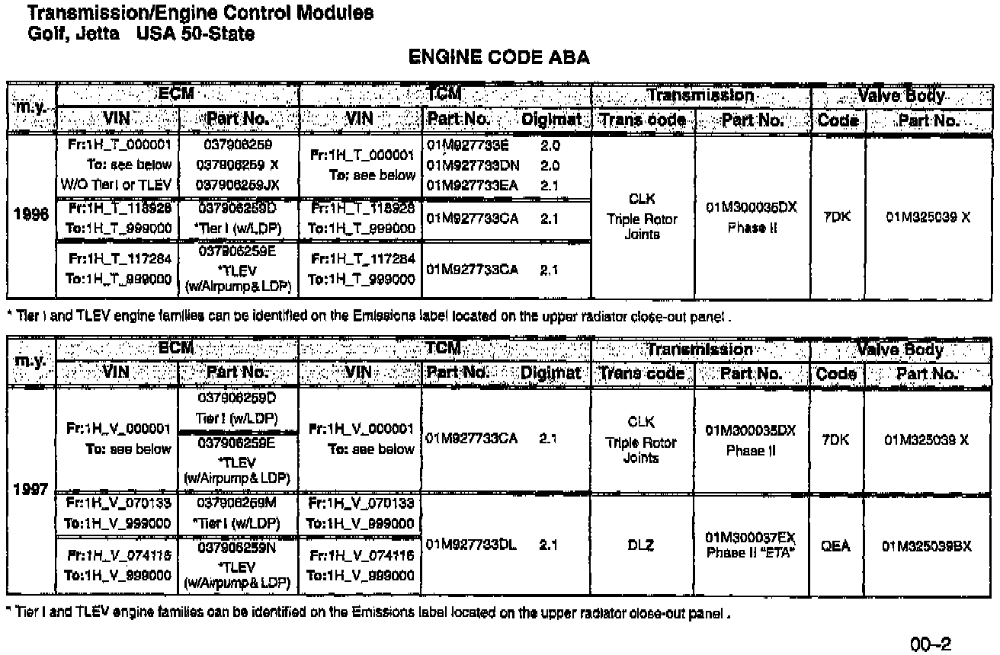
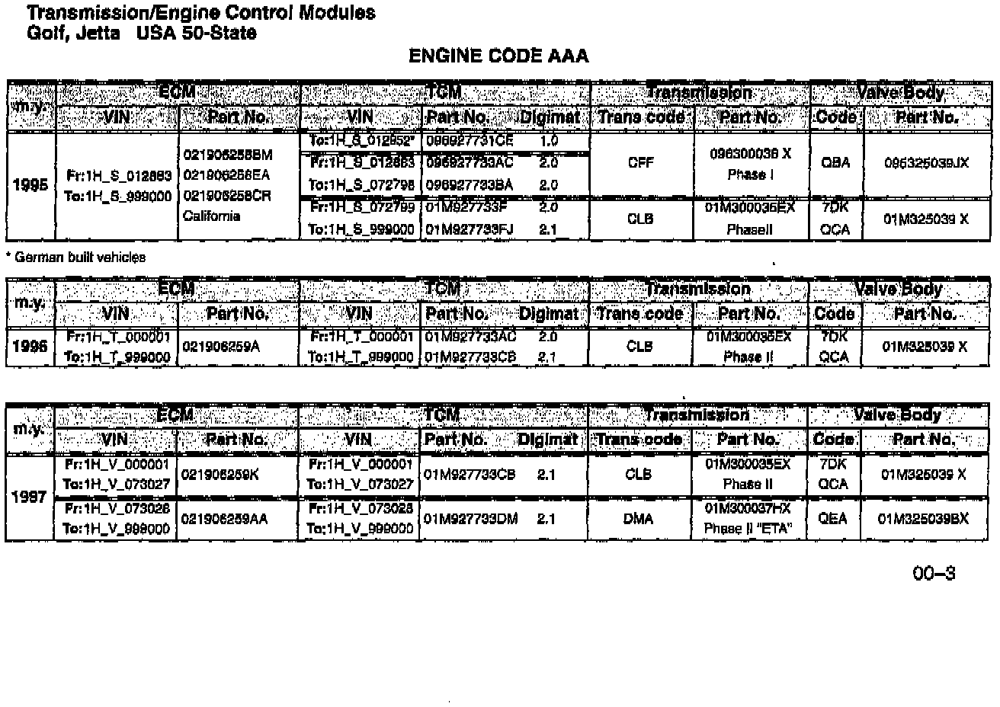

ECM/TCM - Component Replacement Identifiers
Group: 00Number: 97-06
Date: July 31, 1997
Subject:
Digimat Control Module (TCM), Identification
Model(s):
Golf, Jetta 50-State 1993 --> 1997
Supersedes T.B. Group 00 Number 96-03 dated Dec. 20, 1996
Use the following chart to identify which Transmission Control Modules (TCM) are available for various 50-state ECM/TCM combinations.
Note:
^ This Bulletin should be used as a reference only. DO NOT update a vehicle unless a specific condition has been identified.



^ When replacing a TCM for any reason, the TCM must be paired with the Engine Control Module (ECM) according to the charts above.
^ Vehicle Identification Numbers (VIN) are for general reference only. Most VINs shown are approximate.
^ When multiple TCM Part Numbers are listed for a particular ECM/TCM combination, these are shown in order of development i.e., the earliest TCM at the top with later TCMs following below.
CAUTION!
Part numbers are for reference only. Always check with your Parts Dept. for the latest information.